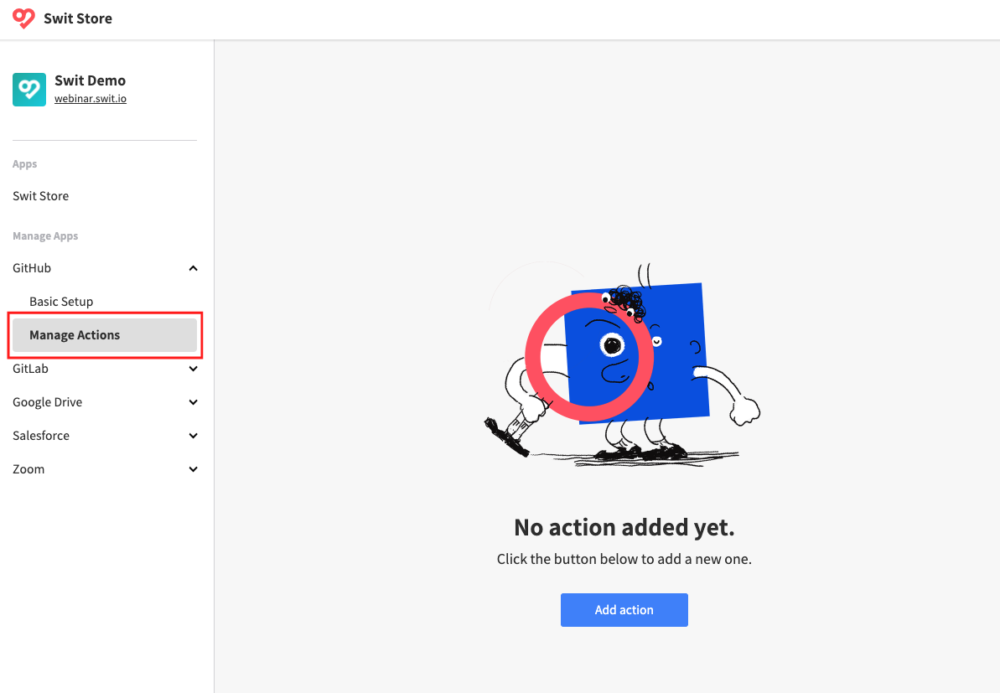
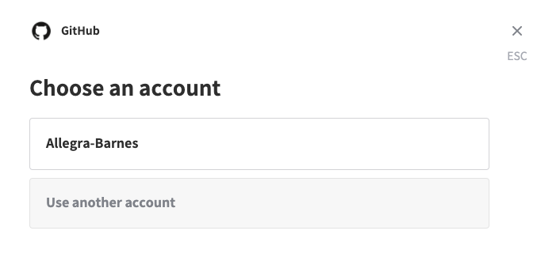
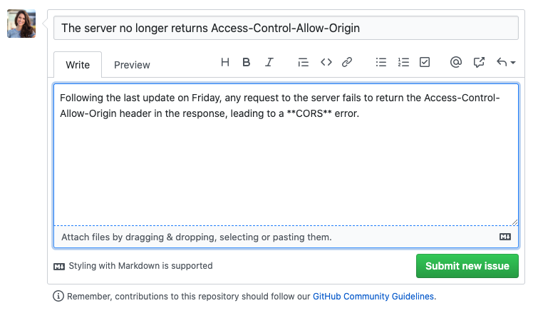
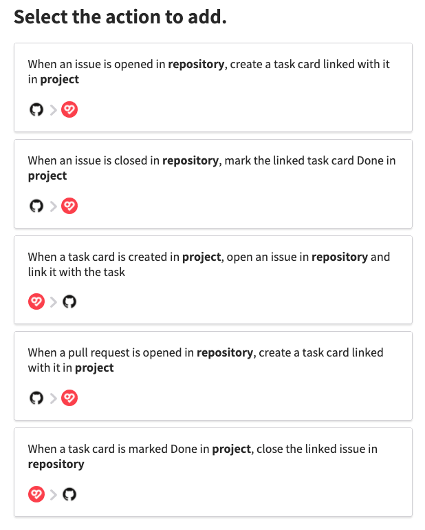

Sync with GitHub
The GitHub integration supports synchronous connections between your GitHub account and Swit workspace. This enables automatic creation of reports or task cards in a Swit workspace from each new event in a GitHub repository, and the other way around as well.
Actions, the basic unit of GitHub integration
Each single workflow established between Swit and GitHub is called an "action." The action is basically a pair of a triggering and a triggered event, for example,
- Triggering: When an issue is opened in a particular GitHub repository
- Triggered: A notification message is created in a particular Swit channel
The screen below shows some of the different actions available. Using a collection of these actions, you can build a fully interactive, instant, bidirectional synchronization between the two services.

Getting started
You can start using the GitHub integration by adding an action.
Different approaches to adding an action
For user convenience purposes, it provides various access points to add an action:
-
Add an action from Store: In Swit Store's left menu, go to GitHub > Manage Actions, then click on Add action in the body section.

-
Add an action from a channel/project: In a channel or project page, click on the GitHub icon in the top right corner, then click on Add action in the next page. In this case, the selectable actions are limited to those relevant either to the channel or project depending on which page you have accessed from.

-
Add an action from a task card: In a task page, find the GitHub section in the bottom right corner, then click on the GitHub icon in it. In this case, the selectable actions are limited to those relevant to the task.

Because you have not yet authorized access to your GitHub account from the workspace, you will be asked to connect a GitHub account.
Authorize with a GitHub account
Once prompted to authorize with your GitHub account, follow the steps below:
-
Click Connect to proceed.
-
You will be directed to the authorization page. Authorize access from your Swit account.

-
If you need to connect multiple GitHub accounts, try adding an action once again as guided in previous subsection, then select Use another account when asked to choose a GitHub account.

Once successfully authorized, you are ready to add an action to sync with a GitHub repository.
Add actions in a channel
The different actions available for Swit channels are to create a chat message or an idea post from each relevant event occurring in a GitHub repository.
Follow the steps below to add an action in a channel. Although we here take one example action, all channel-targeted actions can be established almost in the same way.
-
Go to the Go to Swit Store > GitHub under the Manage Apps heading > A See Different approaches to adding an action
-
Choose the action you want to add, considering:
- Which kind of GitHub event you want to sync with
- Whether to create chat messages or idea posts from those GitHub events

-
Select a GitHub repository and a Swit channel that you want to connect, then confirm your action setup.

-
If successful, you will be directed where you can view all actions you have added (See Section **** for more details about this page).

-
To test the action, create an event relevant to the newly added action. For example, if you have added an action triggered by a new issue opened, open a new issue in the relevant GitHub repository.

-
Check if the test event from GitHub has been successfully reported in the channel, either in the chat room or idea forum as specified by the action.

Add actions in a project
Unlike the previous connection (GitHub and Swit Channel Box), the connection between GitHub and Swit Project Box provides two-way interaction--Some of actions done in Swit Project Box will either open or close an issue in GitHub repository. I will restrict myself here to two actions that are most commonly used.

Creating a Task Card in Swit Project Box
I will pick the first option to demonstrate.
Select a GitHub repository and a Swit Project that you desire to connect.

Open a new issue in your GitHub repository that is connected to Swit and then submit it.

As you can see, Swit picked up the action made in GitHub and automatically created the task card to the linked Project Box.

Opening an Issue in repository and link it to the Task Card
I will pick the third option to demonstrate.

Select a GitHub repository and a Swit Project that you desire to connect.
Create a Task Card in your Swit Project Box that is connected to GitHub.

As you can see, Action 2 above automatically opened the issue to the linked GitHub repository.
추가가 필요한 설명
채널에서 개별적으로 액션을 추가하는 UI 설명
The GitHub integration allows you to add an action in a Channel. Locate the GitHub logo under the Search box, then click on it.
You will be directed to Swit GitHub Integration actions, where you can add actions. Click on Add action.
Choose an account.
Eleclect an action that you want to add.
태스크 카드 내에서 GitHub link 기능 설명
The GitHub integration allows you to create a link in a task card. Click on Link in the GitHub Box.
You will be directed to the Choose an account section. Choose an account you want to connect.
In Link ink task card to GitHub, select a repository, a type, an issue, I will choose Amelia_Lowry/Swit-GitHub-Integration, Issue, GitHub and Swit Integration to demonstrate.
As you can see below, you have successfully created a link.
Manage actions
You can manage the added actions in Manage Actions. Go to Swit Store and locate GitHub on the left-hand side of the screen. Click on the dropdown menu, then select Manage Actions.

Select a GitHub integration that you want to interact with, then click on it.
You will be directed to the following screen.
Here, you can
Sort your existing actions by Creator, Channels, and Projects. If you want to locate a certain action, just sort the list with the filters that make most sense to you.
Edit, delete, and on/off existing actions.